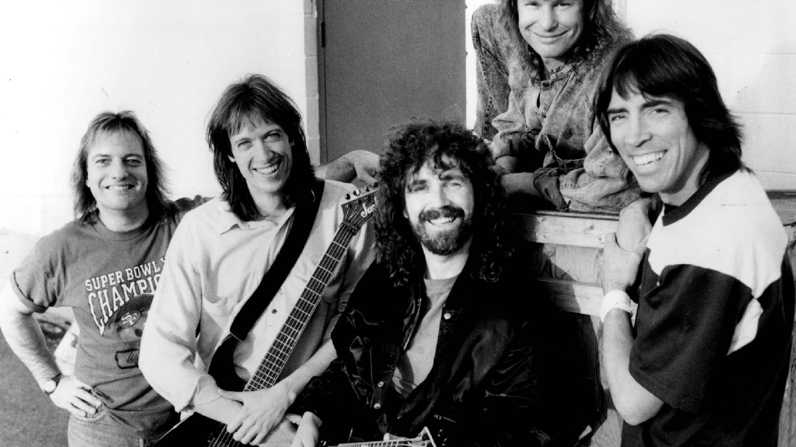
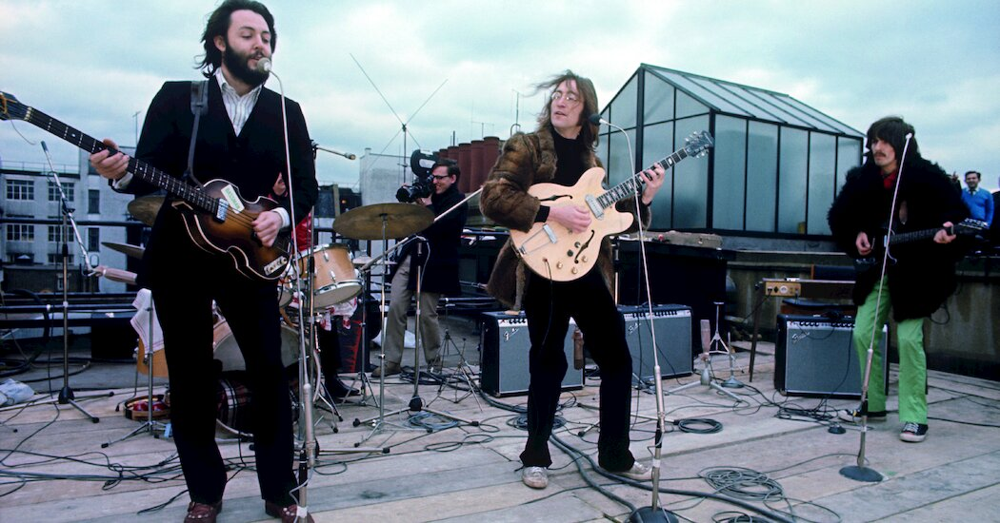
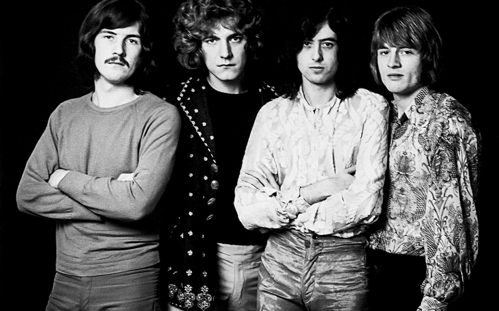
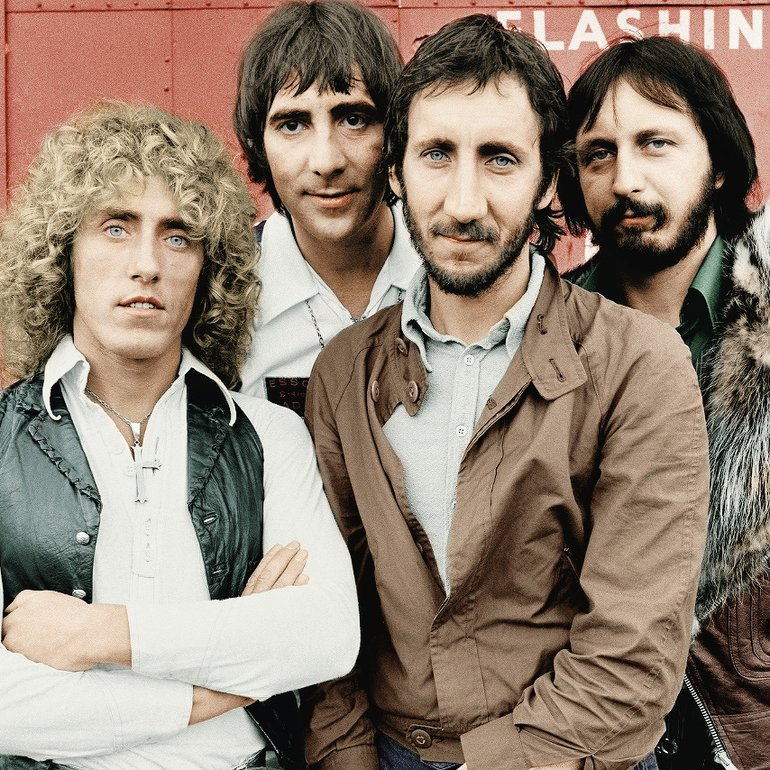
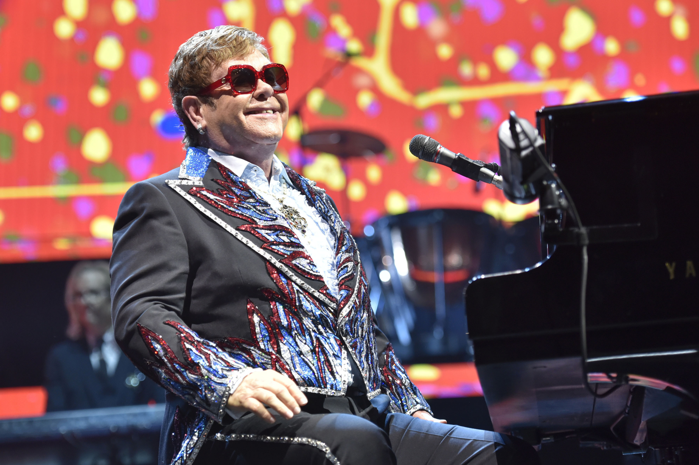

| Dream Theater |
- John Petrucci
- Jordan Rudess
- John Myung
- James LaBrie
- Mike Mangini
|
Progressive Metal |
- Octavarium
- The Count of Tuscany
- Metropolis Pt 1
- Space-Dye Vest
- The Spirit Carries On
|
|
 |
| Boston |
- Tom Scholtz
- Brad Delp
- Barry Goudreau
- Sib Hashian
- Fran Sheehan
|
Hard Rock |
- More Than a Feeling
- Foreplay/Long Time
- Peace of Mind
- Hitch a Ride
- Amanda
|
|
 |
| The Beatles |
- Paul McCartney
- John Lennon
- George Harrison
- Ringo Starr
|
Pop Rock |
- Let It Be
- I Am The Walrus
- Yesterday
- While My Guitar Gently Weeps
- Something
|
|
 |
| Led Zeppelin |
- Jimmy Page
- Robert Plant
- John Paul Jones
- John Bonham
|
Hard Rock |
- Stairway to Heaven
- The Song Remains The Same
- Achilles Last Stand
- Since I've Been Loving You
- Black Dog
|
|
 |
| Queen |
- Freddie Mercury
- Brian May
- John Deacon
- Roger Taylor
|
Rock |
- Hammer to Fall
- Brighton Rock
- I Want it All
- Under Pressure
- The Millionaire Waltz
|
|
 |
| The Who |
- Roger Daltrey
- Pete Townshend
- Keith Moon
- John Entwistle
|
Hard Rock |
- Baba O'Riley
- Won't Get Fooled Again
- Who Are You
- Getting in Tune
- Pinball Wizard
|
|
 |
| Muse |
- Matt Bellamy
- Dominic Howard
- Chris Wolstenholme
|
Alternative Rock |
- Uprising
- New Born
- Bliss
- Apocalypse Please
- Knights of Cydonia
|
|
|
| Tenacious D |
|
Rock |
- Tribute
- Master Exploder
- Rize of the Fenix
- Kielbasa
- Fuck Her Gently
|
|
|
| Elton John |
|
Rock |
- Your Song
- Rocketman
- Love Lies Bleeding...Funeral For a Friend
- I'm Still Standing
- Candle in the Wind
|
|
 |
| Gustavo Santaolalla |
|
Sountracks |
- The Apology Song
- The Last Of Us Theme
- Ando Rodando
- No Existe Fuerza En El Mundo
- De Ushuaia A La Quiaca
|
|
|